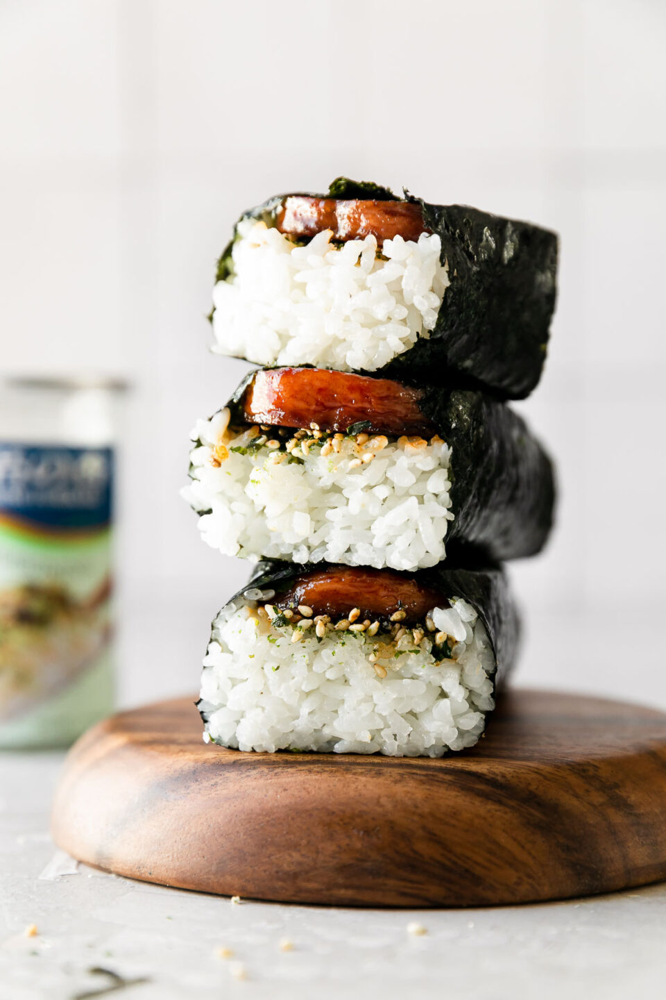
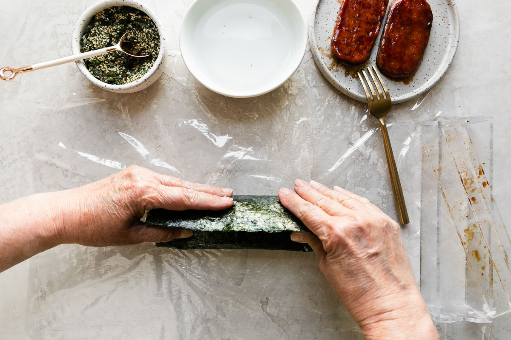
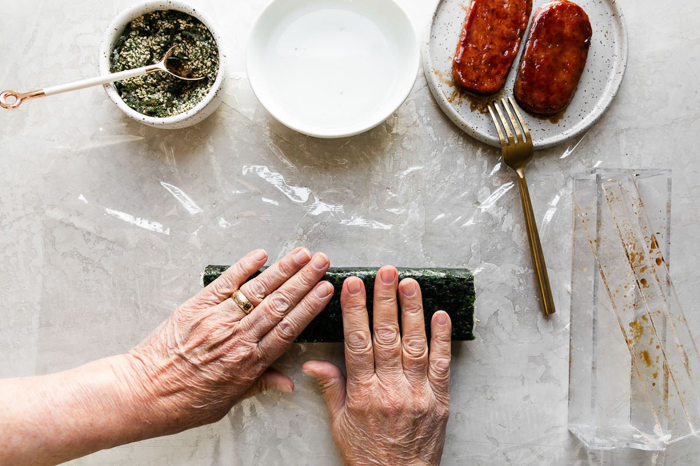
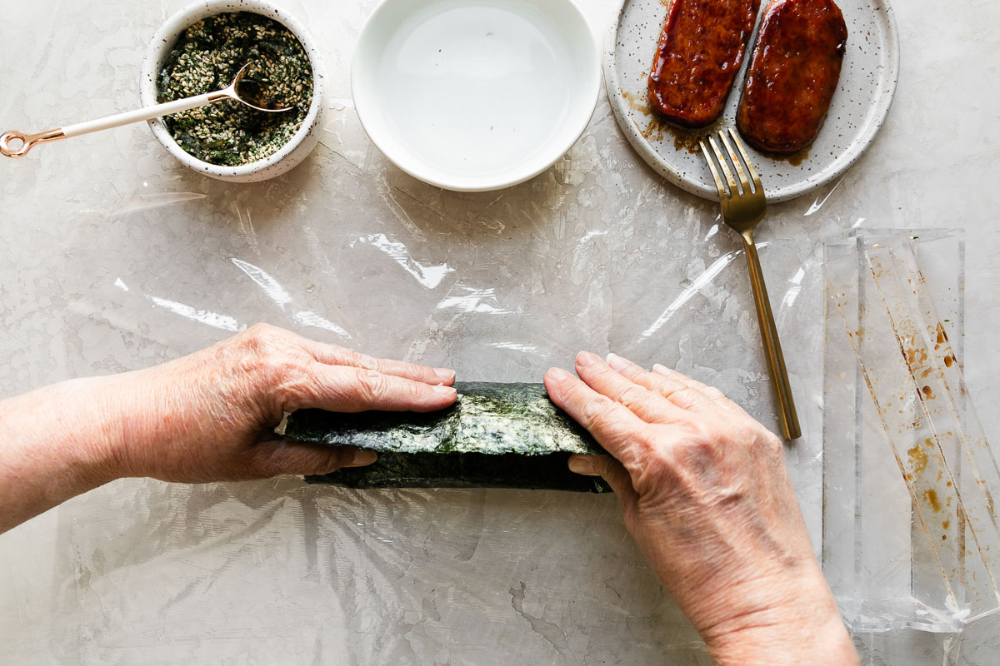
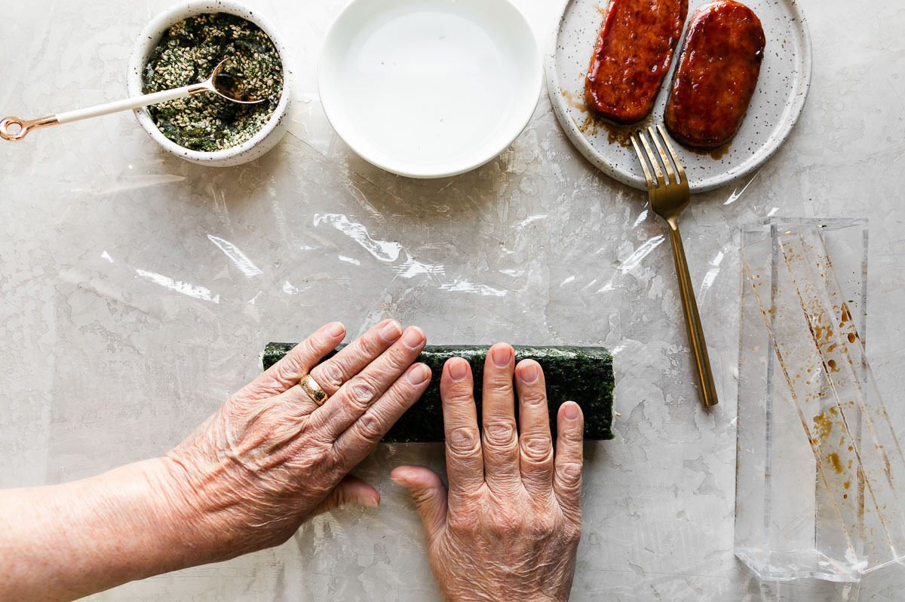

Spam musubi

Spam musubi is one of my all-time favorite comfort foods. Growing up on the mainland meant that my family was far away from our extended family in Hawaii. Whenever my mom pulled out her spam musubi mold, we knew we were in for a comforting treat that would transport us back to Hawaii after the first bite. Mom seriously makes the Best-Ever Spam Musubi – this is her recipe.
Ingredients
- 2 cups Calrose rice, rinsed well
- simple teriyaki sauce, below
- nonstick cooking spray
- 1 (one) 12-ounce can Spam, sliced lengthwise into 7 pieces
- 3 1/2 sheets sushi nori
- heaping 1/3 cup furikake
For the simple teriyaki sauce:
- 1/3 cup dark brown sugar, can sub light brown sugar
- 3 tablespoons soy sauce
- 2 tablespoons mirin
- 1 teaspoon sesame oil
Instructions
Cook the rice:
Place the rice in a fine mesh colander & rinse it well with hot water until the water runs clear. This will take a good minute or two – feel free to jostle the rice with your hands as you rinse it to help speed this process along. Once the water runs clear, drain any excess water from the rice, then transfer it to a rice pot. Following the ratios provided on the rice package directions, add water to the rice pot. Cover & cook. Once the rice is done, let it steam & rest for 5-10 minutes before assembling Spam musubi. Prepare the teriyaki sauce:
Combine all listed ingredients in a small bowl, whisking to combine. Microwave for 30 seconds – 1 minute to dissolve the sugar. Stir to combine then set aside to cool slightly. (Alternatively, you can combine all ingredients in a small saucepan over medium-low heat & cook, stirring occasionally, until the sugar is dissolved, 4-5 minutes.)Pan-fry the Spam & glaze with the teriyaki sauce:
Place a large nonstick skillet over medium heat. Very lightly spritz with nonstick cooking spray. Arrange the sliced Spam in a single layer in the skillet. Cook 4-5 minutes, until lightly browned. Flip the Spam. Reduce the heat to medium-low. Spoon 1 tablespoon of the prepared teriyaki sauce over each slice of Spam. Cook 2-3 minutes longer. Repeat flipping & spooning sauce on the Spam 1-2 more times, until the Spam is as browned & saucy as you like & the teriyaki sauce is reduced to a thick glaze. Remove from the heat & set aside for Spam musubi assembly. Prep the nori & musubi mold:
Place a large piece of plastic wrap or wax paper on your work surface. Grab a piece of sushi nori. Sushi nori has 2 distinct sides – one is rough & textured while the other is shiny & smoother – & is ever-so-slightly rectangular. Place a piece of sushi nori on top of the plastic wrap/wax paper such that its shiny & smooth side is facing down & one of its slightly longer sides is closest to you. Place the outer box of the musubi mold on the center of the nori such that its long edge runs parallel with the longer sides of the nori. Build the Spam musubi:
Use a rice paddle to scrape a small amount of rice off the top of the rice pot. Be sure to scrape off the top rather than digging, which compacts the rice – we want our musubi rice nice & light! Gently add the rice to the musubi mold, filling it almost entirely full. As you fill the mold, use the edge of the rice paddle to gently pat the rice down into a uniform level but, again, avoid pressing down on the rice too much. Once the mold is filled with rice, sprinkle a generous amount of furikake seasoning over top, about 1-2 tablespoons. Arrange two slices of the teriyaki Spam side by side in the musubi mold. Assemble & wrap the Spam musubi:
Place the musubi mold lid on top of the Spam. Press down on the lid firmly, starting at the center & working your way to the outer edge. Once you reach the outer edge, press down on the lid firmly with your thumbs & pointer fingers while using your pinky fingers to simultaneously pull the musubi mold box up. Set the box to the side, then remove the musubi mold top off of the Spam & set aside. Gently-yet-firmly pull the side of the nori sheet facing you up & tautly fold it over the Spam – the nori should stick to the Spam. Brush a little water over the opposite edge of nori, then tautly roll the musubi away from you, sealing the musubi shut. The musubi should be seam side down at this point. Set aside – it will continue to tighten up as it sits.  



Repeat Steps 4-6
with the remaining rice & teriyaki Spam. Your last musubi will only have one piece of Spam, so simply slice the sushi nori in half crosswise & assemble the musubi using only one half of the mold. Slice & serve:
Run a sharp knife under warm water, then slice the double musubis in half crosswise (between the two pieces of Spam), creating 2 individual Spam musubi. Be sure to rinse the knife with warm water before slicing the next musubi – this helps create a clean cut. Enjoy immediately!
Homepage